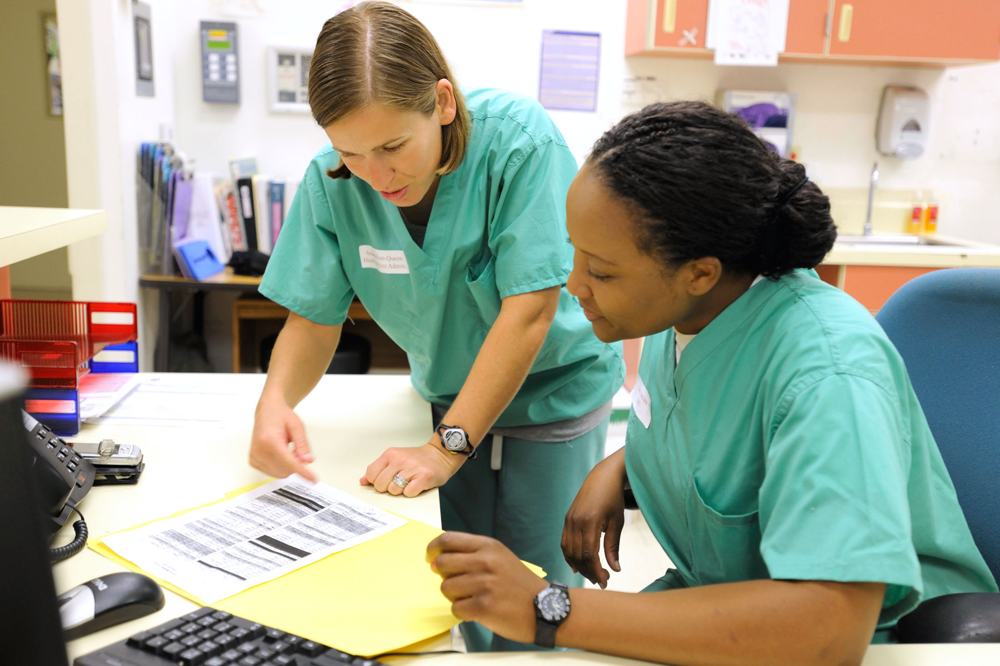

PROGRAMS: Healthcare - Administrative Medical Assistant

Two-Year Associate in Specialized Business (ASB) Degree Program
The Administrative Medical Assistant program at South Hills trains you in the administrative, computer, and communication skills you’ll need for a career in a modern medical office—in any medical setting. As a student in the South Hills AMA program, you’ll learn essential skills such as handling EHR (electronic health records), billing, reception, insurance, and more. AMA students graduate ready to work, with knowledge in medical transcription & terminology, medical administrative skills, practice management and hands-on experience with medical insurance forms & coding.
Our graduates work in such areas as Medical Coder/Abstractor, Transcriptionist, Medical Billing Manager, Medical Unit Secretary and Service Representative.
Successful students in this program have good listening skills and able to take directions well, are able to communicate clearly and enjoy science and problem-solving.
Meet the Faculty
Brenda Ream Stover,
RHIT CCS CPC RMT
AMA Program Coordinator / Full-time Instructor
Pam Meister
Full-time Instructor